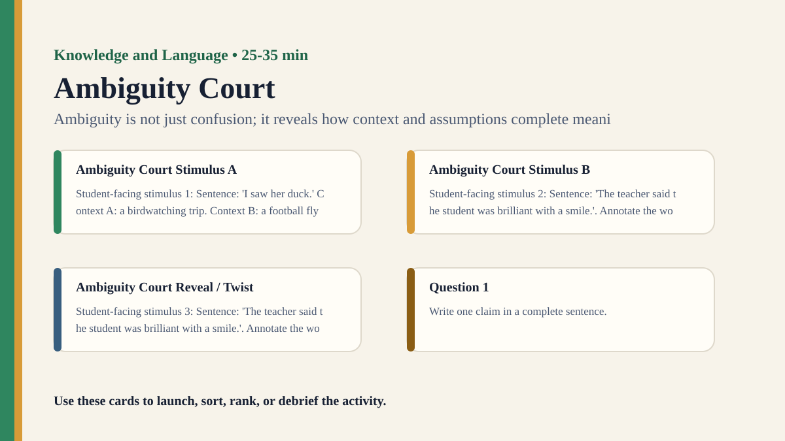

Premium draft resource
Ambiguity Court Classroom Run Kit
Students put ambiguous statements on trial and decide which interpretations are reasonable, strained, or unsupported.
One-Minute Teacher Brief
Students put ambiguous statements on trial and decide which interpretations are reasonable, strained, or unsupported.
Big idea: Ambiguity is not just confusion; it reveals how context and assumptions complete meaning.
Student Prompt
Inspect Ambiguity Court Stimulus A. Record one first claim, the evidence you used, your confidence, and what would make you revise.
Concrete Stimulus Packet
Stimulus
Ambiguity Court Stimulus A
Student-facing stimulus 1: Sentence: 'I saw her duck.' Context A: a birdwatching trip. Context B: a football flying across the room. Annotate the wording. Circle the words that change tone, emotion, implication, or trust.
Students inspect this exact card first and commit to a claim before hearing anyone else.Stimulus
Ambiguity Court Stimulus B
Student-facing stimulus 2: Sentence: 'The teacher said the student was brilliant with a smile.'. Annotate the wording. Circle the words that change tone, emotion, implication, or trust.
Use this for comparison, a second round, or a partner challenge.Stimulus
Ambiguity Court Reveal / Twist
Student-facing stimulus 3: Sentence: 'The teacher said the student was brilliant with a smile.'. Annotate the wording. Circle the words that change tone, emotion, implication, or trust.
Teacher reveal: connect the changed response to the big idea — Ambiguity is not just confusion; it reveals how context and assumptions complete meaning.Actual Lesson Questions
| # | Question for students | Teacher key / cue |
|---|---|---|
| 1 | After inspecting Ambiguity Court Stimulus A, what is your first knowledge claim? | Teacher cue: look for a clear claim, not just a description. |
| 2 | Which exact detail from Ambiguity Court Stimulus A did you use as evidence? | Teacher cue: students should name visible words, data, source features, method features, or contextual clues. |
| 3 | What did you infer beyond the evidence? | Teacher cue: this is where assumptions, framing, models, or perspective usually appear. |
| 4 | How confident are you: 50%, 60%, 70%, 80%, 90%, or 100%? | Teacher cue: confidence is data for the debrief, not a grade. |
| 5 | What missing information would most improve the knowledge claim? | Teacher cue: push for method, source, context, comparison, or definitions. |
| 6 | How much meaning is in words and how much is in context? | Teacher cue: students should move from the classroom example to a general TOK issue. |
Student Task
Use the stimulus cards to complete the observation/inference/evidence/confidence grid, then answer one TOK knowledge question connected to Knowledge and Language.
Teacher Key / Reveal
The key move is not the “right answer”; it is the moment students see how ambiguity is not just confusion; it reveals how context and assumptions complete meaning.
- Strong response: separates observation from inference.
- Strong response: names a method, source, model, language choice, context, or perspective.
- Strong response: revises confidence when new evidence or a new criterion appears.
- Weak response: gives only opinion or says “it depends” without criteria.
Classroom materials
Printable Pack and Cards
Open the classroom resource pack for stimulus cards, CSV card deck, and the activity visual prompt.
Visual Prompt

Setup Checklist
- Choose sentences that are genuinely ambiguous but not socially risky.
- Add context gradually so students can see interpretation change in stages.
Ready-to-Use Examples
- Sentence: 'I saw her duck.' Context A: a birdwatching trip. Context B: a football flying across the room.
- Sentence: 'The teacher said the student was brilliant with a smile.'
Run Resources
- Ambiguity verdict sheet: interpretation, supporting evidence, context needed, verdict.
- Context cards that add speaker, setting, tone, and purpose.
Teacher Language
- Possible does not mean equally justified.
- What evidence moved an interpretation from possible to reasonable?
Sample Student Output
- The words allowed both meanings, but the context made one much better supported.
- I realized I was adding tone that was not actually in the sentence.
Procedure
- Give groups an ambiguous sentence with no context.
- Students list as many possible meanings as they can.
- Add context cards one at a time and ask which meanings become stronger or weaker.
- Groups defend one interpretation and challenge another.
- Debrief how context, intention, and audience shape linguistic knowledge.
Debrief Questions
- Knowledge question: How much meaning is in the words and how much is supplied by context?
- When is an interpretation justified rather than merely possible?
- Can ambiguity be useful for knowledge?
Adaptations
- Support: start with visual puns or simple ambiguous sentences.
- Challenge: distinguish semantic ambiguity, syntactic ambiguity, and pragmatic ambiguity.
Extension Tasks
- Students find ambiguity in a headline, policy, poem, or translated phrase.
- Connect ambiguity to legal interpretation or literary criticism.